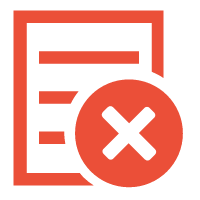

同步配置
(第一步:选择同步信息)
(第二步:检查Diff)
上一步
下一步
同步
返回到项目首页
Tips:
通过同步配置功能，可以使多个环境、集群间的配置保持一致
需要注意的是，同步完之后需要发布后才会对应用生效
同步的Namespace
同步到那个集群
需要同步的配置
按最后更新时间过滤 开始时间:
结束时间:
过滤
重置
Key
Value
Create Time
Update Time
环境:
集群:
Namespace:{{pageContext.namespaceName}}
没有更新的配置
,忽略同步
Type
Key
同步前
同步后
Comment
操作
新增
删除
更新
删除
同步成功!

同步失败!